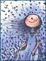

 我的日记本 |
|
他们彼此深信，是瞬间迸发的热情让他们相遇。这样的确定是美丽的，但变幻无常更为美丽。 |
 心情轨迹 |
|
董事长的一切都让人既羡慕又嫉妒，但更人人受不了的是，有一天，上苍忽然赐给他一个神奇的礼物....... |
介绍 |
| 我努力的抓紧世界，最后却仍被世界淘汰，如果一开始就松手，我会不那么伤心吗？你说，亲爱的孩子，世事难料，随他去吧！ |
照相本子 |
| 关于童年你还记得什么？ 两岁时，我拥有一支巨大的粉红猪，它总在我嚎啕大哭时逗笑我。 三岁时，我骑着小木马一路摇到外婆家，它不喝水也不吃草。 四岁时，我离家出走，在公交车上睡着了，最后老师太空人送我回家。 我真的峨眉骗你，我通通都记得，还有照片为证。 |
地下铁 |
|
天使在地下铁的入口， 和我说再见的那一年， 我渐渐看不见了。 十五岁生日的那年秋天早晨， 窗外下着毛毛雨， 我喂好我的猫。 六点零五分， 我走下地下铁。 |
向左走，向右走 |
|
They're both convinced that a sudden passion joined them Such certainth is beautiful but uncertainty is more beautiful still |